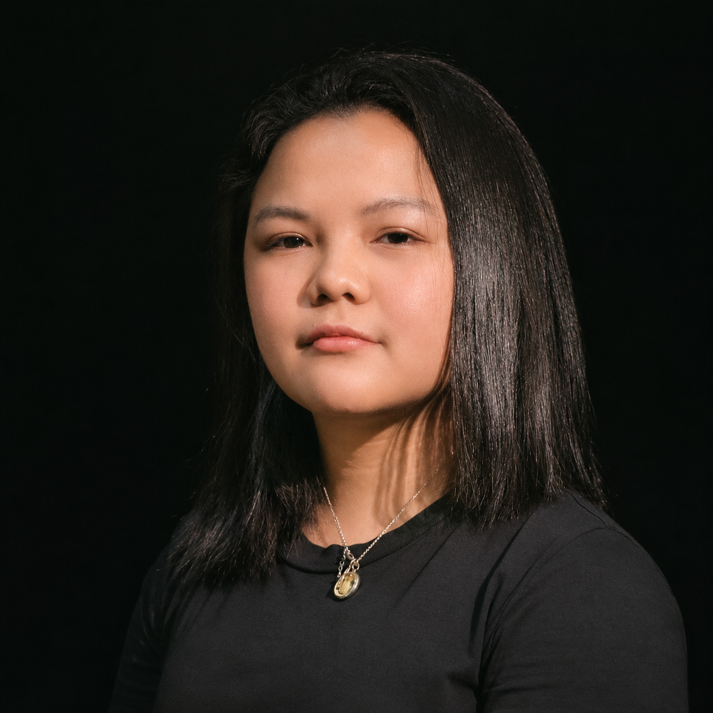

2026
Bachelor of Business Administration
Digital Business and Entrepreneurship · Indian Institute of Management Bangalore
Fashion · Illustration · Creative direction
Fashion designer and creative thinker from Tura, Meghalaya. I bring ideas to life through thoughtful design and careful craft, shaping traditional Garo textiles, motifs, and techniques into garments made for today. Every detail is considered, because heritage deserves to be worn, not just remembered.

I’m always learning and experimenting, drawing on my Garo heritage to make work that feels fresh, personal, and made for today.
Digital Business and Entrepreneurship · Indian Institute of Management Bangalore
Nanyang Academy of Fine Arts · Singapore
Student representative at the NAFA Open House. Participated in the Southeast Asia Art Clinic, exploring the work of contemporary artist Tang Da Wu.
UAL: Central Saint Martins
Explored unconventional ways to develop themes and concepts for a contemporary wearable fashion collection.
Tura, Meghalaya
Collaborate with clients to bring their design concepts to life, managing the process from initial idea through final product.
Agnès b. · Singapore
Guided customers through purchases and outfit selection, built client relationships, handled POS opening and closing procedures, and supported visual merchandising in line with brand guidelines.
Designer · Takashimaya, Singapore
Designed, drafted, and made original products using clothing provided by the company.
Artist · Singapore
Created artwork for the customer catalog and painted shoes to match individual preferences. Contributed to a 16-volunteer project that raised SGD 1,440 in two days.
Have a project in mind?